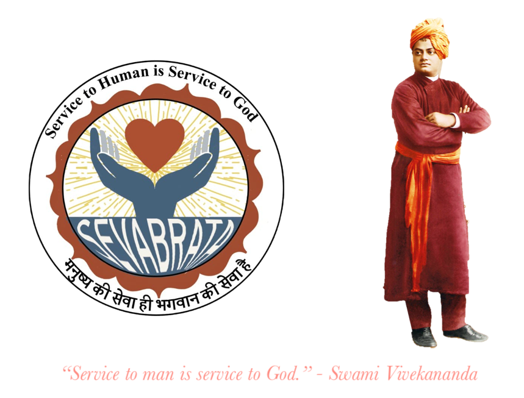

Welcome to Sevabrata
Who We Are
Sevabrata - Dedicated to serve others.
The name and the motto of the organisation entwined. This apolitical and non-profit social organisation is conceived by a few like-minded volunteers, who believe in working in the spirit of service as proclaimed by Swami Vivekananda. Sevabrata aims to extend a helping hand for all those who look for medical guidance and all the financial assistance, logistics, and psychological support related to it. The success of our activities has inspired us to form an organization to be able to serve all who seek our support in their hours of need.
We understand that there is a huge need for medical assistance in rural areas of our country. Especially for people who are financially strained, getting adequate access to medical facilities is at times difficult, if not impossible. The ignorance of the people also adds to their woes. The key problem areas related to medical ecosystem in our country, particularly in rural areas are:
- The lack of knowledge and guidance.
- Ever-increasing medical cost.
- Financial insolvency.
- Unavailability of critical care in rural areas.
While we understand that we cannot hold every hand in need, but within our possibilities, we have pledged to reach out to people as much as we can. This selfless endeavour to help people particularly in need of medical assistance is driven by the urge to give back to society in our simple ways.
Sevabrata Foundation, a registered NGO, was born from the conviction that we should aim to address the huge gap between demand versus accessibility to high quality critical medical care for thousands of underprivileged rural and semi-rural families. At Sevabrata, we are a group of people from diverse backgrounds, and from all over the world, with a single purpose to help bridge the healthcare affordability gap for the poor every step of the way.
Mission
Our unyielding faith on Swamiji’s ideals of Service of mankind is service to God is the mantra behind our mission. We, therefore, make it a point to practice exactly what we believe in so firmly. We consider Sevabrata as a means to reach out selflessly to many desperate & critically ill patients and do our best to provide timely medical help in all matters be it financial, logistical, advisory etc.
Inspired by the enduring legacy of Swami Vivekananda, our mission is:
- Help provide timely medical advice to poor and needy families in rural and semi-rural India.
- Help organise funds from our members & broader society to be able to provide the much needed financial assistance to the needy and helpless suffering families.
- Provide logistical support in terms of transportation and temporary accommodation to patient’s families during the hospitalization.
- Look after the post-hospitalization financial and wellbeing of the patient.
- Keep regular touchpoints and connects with the patient families lest should there be any further deterioration in the health condition.
Progress
Since our inception, we have had the privilege of providing support to several critically ill patients and their families. We firmly believe that we have been blessed by revered Swamiji to have been able to organise much-needed logistical, financial, and medical consultation with leading medical practitioners in Bangalore thus enabling their timely hospitalization. This gives us immense joy that we have been of service to mankind which is our mission.
Some of our recent success stories are that of Poltu Bera. Poltu, who hailed from rural West Bengal, had almost come to believe that he wouldn’t live long. After all, even today, only a minuscule number of Indians donate their organs, and a far fewer percentage get them on time. Read about others in our Blog on Prakash Bag, Guddi Devi, Palash Das et al. We are also exploring other services like supporting remote health treatment.
Sevabrata would provide end to end financial assistance to the patient. As an organization, the funds in our reserve would be used. And thereafter, through various campaigns, we would raise money as per the requirement. We endeavour to provide the following assistance to critically ill patients and their families:
- Raise funds for the treatment of the patients through a global campaign.
- Find appropriate doctors and hospitals for best and economic treatment.
- Provide guidance and logistics support to the patient during the treatment.
- Support post-treatment care up to rehabilitation on case to case basis.
- Provide emotional support in challenging times.
New Campaigns
Blogs
Contributing
This is a unique and enthusiastic beginning of a promising new-born organization. Support from all corners is solicited to flourish the idea and see a fully-grown organization within the next few years.
You can help us in our journey on the footsteps of our revered Swamiji by being part of it yourself. We would love to connect with you and welcome you to our family. We sincerely believe doing good for society ultimately helps us be better humans. It takes us closer to the realization of the real meaning of human life is to live for others and not for one’s own selfish goals.
Sevabrata is a unique platform to execute service in an organized manner to implement the philosophy of Be good and do Good.
May Swamiji bless us all and help us to realise our goal.
You can connect with us on social media via our Facebook page.
You can send in your donations directly via NEFT / RTS to the following account:
Payee Name: SEVABRATA FOUNDATION
Account Number: 4537020000293730
Account Type: Current
Bank IFSC Code: JSFB0004537
Bank Branch: Jana Small Finance Bank, Jeevanbhima Nagar
Membership
Please reach out to us by email at: sevabratafoundation
You can also send emails to: nanda_sandip